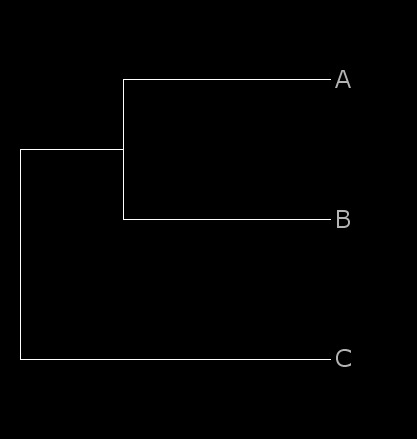
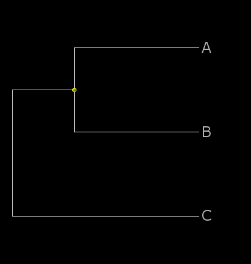
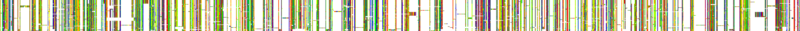
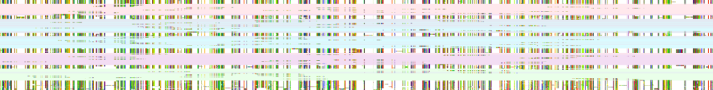
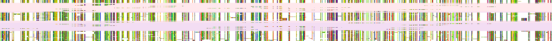
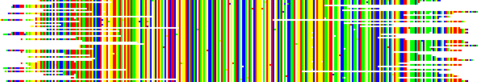

v. 0.33
This is a snapshot of the PAGAN documentation at the program homepage and may be outdated. Please use the online version if possible.
Introduction
PAGAN is a general-purpose method for the alignment of sequence graphs. The main advantage of the graph representation of sequences is the graphs' ability to describe the uncertainty in the presence of characters at certain sequence positions. This is highly useful in phylogenetic progressive alignment and allows for capturing the different properties of insertions and deletions when alignments are iterated for multiple sequences. However, graphs also allow describing the uncertainty in input sequences and modelling e.g. homoploymer errors in Roche 454 reads, or representing inferred ancestral sequences against which other sequences can then be aligned.
The development of PAGAN started in Nick Goldman's group at the EMBL-European Bioinfomatics Institute, UK, and continues now in Ari Löytynoja's group at the Institute of Biotechnology, University of Helsinki, Finland. PAGAN is still under development and will hopefully evolve to an easy-to-use, general-purpose method for phylogenetic sequence alignment. The graph representation has features that make it especially powerful for phylogenetic placement of sequences into existing alignments. As such a tool has direct applications in the analyses of increasingly abundant RNA-seq data and there is no satisfactory solution available, we have focused on this problem and implemented the necessary functionality first.
This document explains how to install and start using the PAGAN software.
- Introduction
- Installation of PAGAN
- Using PAGAN
- Phylogenetic multiple alignment
- Phylogenetic placement of sequences into an existing alignment
- Assignment of reads to specific nodes
- Use of Archaeopteryx-PAGAN-Edition
- Examples of guided placement
- Unguided placement
- Pair-end reads and 454/ PacBio data
- Overlapping pair-end reads
- Consensus ancestor reconstruction and phylogenetic contig assembly
- Typical analysis of NGS data
- Pileup alignment without a guide tree
- Additional program options
- Inference of ancestral sequences for existing alignments
- Configuration files: input, output and format
- Checking for PAGAN updates
- Appendix: installing boost from source code
Installation of PAGAN
PAGAN is open-source software licensed under the GPL. The source code is provided at http://code.google.com/p/pagan-msa. PAGAN is developed and tested on a Linux system and we can currently only provide instructions for that platform, with a special focus on the popular Ubuntu/Debian-based distributions.
Installation of Boost libraries
PAGAN requires -dev versions of two utility libraries from http://www.boost.org that may not be included in standard OS installations. These libraries have to be installed before compiling the PAGAN source code. On Ubuntu, they can be installed using commands:
apt-cache search libboost-program-options apt-cache search libboost-regex
(See which version number, ending with -dev, is provided and edit the command below.)
sudo apt-get install libboost-program-options1.40-dev sudo apt-get install libboost-regex1.40-dev
If your distribution does not provide Boost libraries (highly unlikely) or you are not allowed to install software on your system, you can download and install the necessary library from the Boost project repositories directly into your PAGAN source code directory. See Appendix for details.
Download and installation of PAGAN using git
The most recent version of the PAGAN source code is available from the git-repository and snapshots of this are downloadable as compressed tar-packages. The git software can be found at http://git-scm.com. On Ubuntu, it can also be installed using command:
sudo apt-get install git-core
Given that git is installed, the PAGAN source code can be downloaded and compiled using commands:
git clone https://code.google.com/p/pagan-msa/ cd pagan-msa/src make -f Makefile.no_Qt ./pagan
Without git, the latest (but possibly not up-to-date) tar-packaged source code can be downloaded and compiled using commands:
wget http://pagan-msa.googlecode.com/files/pagan.src.latest.tgz tar xzf pagan.src.latest.tgz cd pagan-msa/src make -f Makefile.no_Qt ./pagan
Using PAGAN
PAGAN is a command-line program. It can be used by (a) specifying a list of options (command-line arguments) when executing the program, or (b) creating a configuration file with the options and specifying that when executing the program. The configuration file does not need to be created from scratch as PAGAN can output the options specified for an analysis in a file. This file can then be edited if necessary and specified as the configuration file for another analysis. Alternatively, the file can be considered as a record of a particular analysis with a full description of options and parameters used.
A list of the most important program options is outputted if no arguments are provided:
./pagan
and a more complete list is given with the option --help:
./pagan --help
In general, the option names start with -- and the option name and value (if any) are separated by a space. The configuration file makes an exception and can be specified without the option name:
./pagan option_file
Also this one can be given in the standard format and the following command is equivalent:
./pagan --config-file option_file
Phylogenetic multiple alignment
PAGAN is based on a progressive algorithm that aligns sequences according to a guide tree. It (currently) cannot compute a tree by itself and requires the user to provide a rooted binary tree relating the sequences. The leaf names in the tree and the sequence names (until the first space) in the sequence file have to match exactly. Alignment is only performed for the parts of the guide phylogeny that have sequences associated; the unnecessary branches and sequences are pruned/dropped out.
The minimal command to perform the alignment is:
./pagan --seqfile sequence_file --treefile tree_file
The resulting alignment will be written in file outfile.fas. If you want to use another file name, you can specify that with option --outfile:
./pagan --seqfile sequence_file --treefile tree_file --outfile another_name
PAGAN will automatically add suffix .fas.
The sequence input file has to be in FASTA format and the guide tree in Newick tree format, with branch lengths as substitutions per site. The resulting alignment will be written in FASTA format (and in XML-based HSAML format if option --xml is used). PAGAN supports the alignment of nucleotide, amino-acid and codon sequences although the last two are still experimental.
Phylogenetic placement of sequences into an existing alignment
There are many methods to add sequences to existing alignments. However, most of these ignore the phylogenetic relationships among the data and simply place the new sequences in the bottom of the alignment. The idea of phylogenetic placement is to extend existing alignments by aligning the new sequences to their true evolutionary positions in the reference alignment. This ensures that the new sequences are compared to the closest possible reference sequence and the alignment created, including the gaps opened for insertions and deletions, is as accurate as possible.
PAGAN can reconstruct ancestral sequence history for a reference alignment related by a phylogeny. Sequences can then be added to this reference alignment by aligning the new sequences against terminal (extant reference sequences) or internal nodes (reconstructed ancestral sequences) and making room for the added sequences in their correct evolutionary positions among the reference sequences; the addition of new sequences does not affect the relative alignment of original sequences.
The current version of PAGAN is primarily aimed for guided placement of sequences, i.e. addition of sequences for which the (rough) phylogenetic location is known. The program includes support for unguided placement and can exhaustively search for the best nodes to place the new sequences. However, the latter is still experimental and, if target nodes for guided placement are not specified and exhaustive search is not selected, PAGAN will by default add the sequences at the root of the phylogeny.
Originally the target application for the phylogenetic placement was in the analysis of short NGS reads but the same principles also work for full-length DNA sequences and for amino-acid sequences. For historical reasons, the new sequences added to the alignment are called 'reads'.
The minimal command to perform the sequence placement is:
./pagan --ref-seqfile ref_alignment_file --ref-treefile ref_tree_file --readsfile reads_file
The reference alignment has to be in FASTA format and the reference tree in Newick or Newick eXtended (NHX) format; the reads (or sequences in general) that will be added in the reference alignment can be either in FASTA or FASTQ format. If the reference alignment consists of one sequence only, the reference guide tree is not required. Again, you can define your own output file with option --outfile.
Assignment of reads to specific nodes
If the phylogenetic position of the sequences to be added is known (e.g. the species in question is an outgroup for the clade X), this information can be provided for the placement. Furthermore, one can name multiple alternative positions for the sequences (because the precise position is not known or the reference contains paralogous genes and the copies which the sequences come from are not known) and PAGAN will choose the one where the sequences matches the best. Sequences are assigned to a specific node or a set of nodes using the NHX tree format with an additional tag TID. The tag identifier can be any string, in the example below we use number 001. One can use any number/combination of tags as long as each node and each sequence has at most one tag.
As an example, let's assume
a reference alignment:
>A AGCGATTG >B AACGATCG >C TGCGGTCC
and a read that we want to add in FASTA:
>D TID=001 AGCGATCG
or in FASTQ format:
@read_D_0001@3@15@13524@18140#0/1 TID=001 AGCGATCG + CCCCCCCC
The placement of the read in the reference alignment depends on the format of the reference tree:
a phylogeny in plain Newick format adds the read at the root of the tree:
((A:0.1,B:0.1):0.05,C:0.15);
a phylogeny in NHX format with one matching label adds the read to that node:
((A:0.1,B:0.1):0.05[&&NHX:TID=001],C:0.15);
a phylogeny in NHX format with several matching labels finds the best node and adds the read to that:
((A:0.1,B:0.1):0.05[&&NHX:TID=001],C:0.15):0[&&NHX:TID=001];
With ArchaeopteryxPE, the target nodes are shown with yellow dots and the three tree files look like this:
  
In all cases, options --test-every-internal-node and --test-every-node override the placement information given in the guide tree and exhaustively search the best placement.
Use of Archaeopteryx-PAGAN-Edition
The NHX phylogeny format used for the tagging of target nodes for guided placement is unique for PAGAN. To facilitate the preparation and visualisation of the reference phylogenies, we have modified Archaeopteryx, the superb phylogeny visualisation program by Christian M Zmasek, to understand the PAGAN-specific tags and allow for their editing. The original Archaeopteryx program and documentation for its use can be found at http://phylosoft.org/archaeopteryx/.
The Archaeopteryx-PAGAN-Edition (here abbreviated as ArchaeopteryxPE) has one additional feature compared to the original program: the program can read, display, edit and write NHX files containing TID=<string> tags used for guided sequence placement with PAGAN. For any other purposes of tree display or editing you should use an up-to-date version of the original Archaeopteryx program. ArchaeopteryxPE is available as Java jar-file at the download page and can then be started with the command:
java -jar archaeopteryxPE.jar [reference.nhx]
where the optional argument 'reference.nhx' specifies a phylogeny file. (An example of a valid tree file is available at the download page.) This command assumes that the ArchaeopteryxPE program is located in the same directory; if not, type
java -jar /path/to/dir/with/archaeopteryxPE.jar reference.nhx
The source files modified to provide the necessary functionality are included in a separate file. This is provided to comply with the GPL and is not needed by a typical user.
The tree in the example file provided contains two types of NHX tags, D=Y and TID=0[12]. The red dots indicate duplication nodes (D=Y) and yellow dots the PAGAN target nodes (TID=01 or TID=02). If a yellow node is clicked, a panel with the node data, including the PAGAN TID, is opened. To edit an existing TID tag or add a new tag at another node, the node has to be right-clicked and then "Edit Node Data" selected (or "Edit Node Data" selected at the "Click on Node to:" drop-down menu on the left and then the node clicked). This will open an edit panel with the PAGAN TID field in the bottom. The text-insert mode can be activated by clicking (repeatedly) the text field on the right side of the page icon. When saving the tree file, the NHX format can be selected from the file format drop-down menu.
Examples of guided placement
The PAGAN download files contain example datasets for guided placement of protein sequences (full length and fragments) and NGS reads. The datasets can found in directories `examples/protein_placement` and `examples/ngs_placement`.
The idea of guided placement is to extend existing alignments with new sequences for which the (rough) phylogenetic location is known. The situation may be complicated by paralogous genes and uncertainty of the right target for the new sequences. For such cases, PAGAN allows indicating several potential targets and then chooses the best location by aligning the query sequences to each specified target.
The examples are based on simulated data. In these examples, we have reference alignments that include gene sequences from several mammals; the hypothetical gene has duplicated first in the ancestor of primates and rodents and then again in the ancestor of rodents. Our new sequences come from a primitive primate, believed to belong phylogenetically between tarsier and lemur, and a rodent, belonging between guinea pig and ground squirrel. Because of the gene duplications, the primate and rodent sequences have two and three potential target locations, respectively, in the phylogeny. These are indicated in the reference phylogenies using special TID tags. The phylogenies and the target locations for guided placement can be viewed and edited with the ArchaeopteryxPE software available on the PAGAN download site. ArchaeopteryxPE indicates the duplication nodes with red dots and the TID target nodes with yellow dots and the guide phylogeny looks like this:

When sequences are placed with PAGAN, it first tries placing each query sequence to every matching target node and chooses the best node. If several target nodes score equally well, the sequence is assigned to each one of them. PAGAN then starts aligning the sequences to targets, adding several query sequences to the same target using a progressive approach. The complete new subtree is then inserted back to the reference alignment, adding space for the new insertions if necessary. Importantly, the relative alignment of existing reference sequences is not changed.
The examples demonstrate that the selection of the target node for each query sequence is not straightforward. Long sequences are placed correctly but shorter ones may be placed to a wrong node. Errors are also more likely between closely-related paralogs than between distant ones.
Example of guided placement of protein sequences
The following files are included in directory `examples/protein_placement`:
- reference_aa.fas : simulated reference alignment.
- reference_tree.nhx : reference phylogeny with some nodes tagged for placement.
- input_aa_full.fas : simulated amino-acid sequences.
- input_aa_frags.fas : a subset of the one above, broken into fragments.
The data can be analysed using the following commands:
pagan --ref-seqfile reference_aa.fas --ref-treefile reference_tree.nhx \ --readsfile input_aa_full.fas --outfile aa_full_alignment pagan --ref-seqfile reference_aa.fas --ref-treefile reference_tree.nhx \ --readsfile input_aa_frags.fas --outfile aa_frags_alignment
The resulting alignments will be written to files aa_[full|frags]_alignment.fas.
The reference alignment used for the analysis, the true simulated alignment and the resulting PAGAN alignments look like this (click to see larger images):
 |
| Reference alignment |
 |
| True simulated alignment |
| Placement of full sequences |
 |
| Placement of sequence fragments |
{kind=link}
The different background colours for the placed sequences indicate their different origin.
Example of guided placement of NGS reads
The following files are included in directory `examples/ngs_placement`:
- reference_codon.fas : simulated reference alignment.
- reference_tree.nhx : reference phylogeny with some nodes tagged for placement.
- input_ngs.fastq : simulated Illumina reads.
- input_ngs_primates.fastq : a subset of the one above.
The data can be analysed using the following command:
pagan --ref-seqfile reference_codon.fas --ref-treefile reference_tree.nhx \ --readsfile input_ngs.fastq --outfile read_alignment
The resulting alignments will be written to file read_alignment.fas.
If we add the option --config-log-file:
pagan --ref-seqfile reference_codon.fas --ref-treefile reference_tree.nhx \ --readsfile input_ngs.fastq --outfile read_alignment --config-log-file simple.cfg
the arguments used for the analysis will be written to the file simple.cfg. This file works as a log file of the specific settings used for the analysis and allows repeating the same analysis with the command:
pagan simple.cfg (or pagan --config-file simple.cfg)
The use of config files simplifies complex commands. For example, the following:
pagan --ref-seqfile reference_codon.fas --ref-treefile reference_tree.nhx \ --readsfile input_ngs.fastq --trim-read-ends --build-contigs --use-consensus \ --consensus-minimum 3 --show-contig-ancestor --outfile read_alignment \ --config-log-file contigs.cfg
specifies config file contigs.cfg. As the arguments given on the command line override those given in a config file, the following command repeats a similar analysis for another data set.
pagan contigs.cfg --readsfile input_ngs_primates.fastq --outfile primate_alignment
The reference alignment used for the analysis, the true simulated alignment and the resulting PAGAN alignments look like this:
|  |
| Reference alignment |
 |
| True simulated alignment |
{kind=link}
|  |
| Placement of all reads |
|  |
| Placement of primate reads |
{kind=link}
{kind=link}
The different background colours for the placed sequences indicate their different origin.
You may check the content of files read_alignment_contigs.fas and primate_alignment_contigs.fas:
 |  |
| Contigs from all reads | Contigs from primate reads |
The quality of contigs is expected to improve with a higher sequencing coverage.
See pagan --help and the program documentation for additional options.
Unguided placement
If no target nodes (TID tags) are specified in the reference phylogeny, PAGAN will by default add the sequences in the bottom of the alignment by aligning them against the root node. This can be overridden with options --test-every-internal-node and --test-every-node that exhaustively search through either internal nodes or all nodes (including leaf nodes) and add the sequence at the node where it matches the best.
Exhaustive search using PAGAN's exact alignment can be very slow. To speed up the search of the optimal placement node, PAGAN can use Guy Slater's Exonerate; Exonerate is not provided by the PAGAN package and has to be installed separately and be on the system's execution path ($PATH). The default combination of settings is chosen with option --fast-placement and typically one would also use option --test-every-internal-node or --test-every-node, or have a guide tree with tagged nodes for placement. With this option, PAGAN runs Exonerate local alignment against the chosen nodes (all/all internal/all tagged) and keep the best of them; it would then run Exonerate gapped alignment against those nodes and choose the best for the placement. With other options, one can choose to perform just a local or gapped alignment with Exonerate, and change the number of nodes kept after each round. The number of nodes kept is based either on the score relative to the best score, or a fixed number of best-ranking nodes. If more than one node is returned by Exonerate, PAGAN will perform alignments against those and choose the best scoring one for the placement. With option --use-exonerate-anchors, Exonerate hits are used to reduce the search space in the final sequence placement; this option is automatically chosen with --fast-placement.
Pair-end reads and 454/PacBio data
For the alignment of NGS reads, additional options --pair-end, --454 and --pacbio are useful. The first one merges paired reads into one (separated by a spacer) before the alignment and the second and third model the ambiguous length of mononucleotide runs and the high frequency of insertion-deletions in data coming from Roche 454 and PacBio SMRT platforms. The pairing of pair-end reads assumes that the reads have identical names (until the first space) with the exception that the left read ends with /1 and the right read with /2. In the resulting alignment, the paired sequence will have suffix /p12.
Overlapping pair-end reads
The length and overall quality of NGS data can be improved by using such a short fragment length that the reads starting from each end of the fragment overlap in the middle. PAGAN allows merging such reads and handling them as one sequence. Merging is done using option --overlap-pair-end, the reads successfully merged having suffix /m12 in the resulting alignment.
The merging requires significant overlap between the two reads in their pairwise alignment (performed without masking). Options --overlap-minimum and --overlap-identity can be used to change the minimum length and base identity of this overlap. Shorter overlaps that show perfect base identity are also accepted; the minimum length of this can be changed with option --overlap-identical-minimum. The merged reads can be outputted in FASTQ format using option --overlap-merge-file. PAGAN can also be used just to merge the overlapping reads:
./pagan --overlap-merge-only --readsfile reads_file --overlap-merge-file merge_file
Consensus ancestor reconstruction and phylogenetic contig assembly
PAGAN's graph reconstruction is based on maximum parsimony. In NGS read placement, the overlapping regions of reads placed to a specific target node are expected to be identical and any differences observed are (with the exception heterozygosity that we ignore) some sort of errors. For the placement of DNA sequences, PAGAN offers an alternative approach to reconstruct ancestor graphs based on majority consensus. This is selected with option --use-consensus.
Using a similar majority consensus approach, PAGAN can combine reads placed to a specific target into longer contigs. This is done with option --build-contigs; the minimum number of reads supporting a site in the contig can be changed with option --consensus-minimum. The contigs, with the reads supporting them, are written to a file named *_contigs.fas.
By default, the disconnected contigs are bridged with n's, estimating the size of the contig gap from the outgroup ancestral sequence. With option --show-contig-ancestor they can be bridged using the actual ancestral sequences, the contig gaps indicated with lower case characters.
Typical analysis of NGS data
A typical command to perform the placement of NGS reads could be:
./pagan --ref-seqfile ref_alignment_file --ref-treefile ref_tree_file --readsfile reads_file \
[--trim-read-ends] [--discard-overlapping-identical-reads] [--rank-reads-for-nodes] \
[--pair-end] [--overlap-pair-end] [--454] where the optional (and some mutually exclusive) options are in square brackets.
Depending on the output, the thresholds for masking and trimming can be adjusted using the relevant options explained below. The effect of trimming is obvious from the output; the bases written in lower case in the output were masked and considered as N's during the alignment. A sequence of N's matches any sequence and gives rubbish alignments; if that happens, you may need to raise the masking threshold or lower the trimming thresholds.
Pileup alignment without a guide tree
PAGAN can make "pileup" alignments by adding the sequences in the order their appear in the input file. This is not recommended for distantly-related sequences but can be useful for highly similar sequences that require alignment. This may be relevant e.g. in the analysis of overlapping noisy reads from the same locus; if the reads have been generated on Roche 454 or Ion Torrent platform, PAGAN's ability to model the homopolymer errors is especially useful.
Like in any alignment also in a pileup alignment the consenus sequence (the alignment of sequences included so far) and the next sequence to be added should overlap. PAGAN can include sequences that do not overlap but the region in between has to be bridged by other sequences and thus the order of adding the sequences can be important. If the sequences are from the same species, the option to reconstruct the consensus sequence can also be useful.
The pileup alignment is done by selecting option --reads-pileup and defining the input file with --readsfile reads_file. Typically one would also add option --use-consensus to specify that the character states are based on consensus, not the last-added and possibly incorrect sequence (e.g. due to contamination of the data), and to output the final consensus sequence. If the sequences are from Roche 454 or Pacific Biosciences platforms, one may also add option --454 or --pacbio to tune the parameters specifically for those instruments; many other options are naturally compatible with the pileup alignment, too.
The many options needed for this can be defined in a config file. Assuming that the file 454.cfg contains the following:
454 = 1 reads-pileup = 1 use-consensus = 1 build-contigs = 1 no-terminal-edges = 1 silent = 1
the pile-up alignment for a set of 454 data can then be generated with the command:
./pagan 454.cfg --readsfile reads_file --outfile output_file
Example of pileup alignment of 454 reads
The PAGAN download files contain an example dataset for pileup alignment of overlapping 454 reads. The dataset can found in directory `examples/454_pileup`. The following file is included:
- 454_reads.fas : simulated overlapping 454 reads
The data can be analysed using the following command:
pagan --reads-pileup --use-consensus --454 --readsfile 454_reads.fas --outfile 454_reads_pagan
The resulting alignment will be written to file 454_reads_pagan.fas.
Using the config file from above, a similar analysis could be performed with the command:
pagan 454.cfg --readsfile 454_reads.fas --outfile 454_reads_pagan
The modelling of homopolymer error has an impact even in the alignment of relatively clean data:
|  |
| PAGAN alignment |
{kind=link}
 |
 |
 |
| Alignments with other popular methods |
Additional program options
Some of the options printed by ./pagan --help relate to unfinished features and may not function properly. Only the main options are documented here.
Generic options
- Option --silent minimises the output (doesn't quite make it silent, though).
- Options --indel-rate can be used adjust the insertion and deletion rates. Although it would be possible to consider the two processes separately, this has not been implemented yet.
- Options --gap-extension and --end-gap-extension define the gap extension probability for regular and terminal gaps. For meaningful results, the latter should be greater (and, for pair-end data, equal to --pair-read-gap-extension).
- Options --dna-kappa and --dna-rho affect the DNA substitution scoring matrix; base frequencies are estimated from the data.
- Options --codons translates DNA sequences to codons and aligns them using the codon substitution model. (experimental)
- Options --scale-branches, --truncate-branches and --fixed-branches override the branch lengths defined in the guide tree. By default, long branches are truncated to make the scoring matrix more informative; this can be prohibited with --real-branches.
- Option --output-ancestors writes the parsimony-reconstructed ancestral sequences for the internal nodes of the tree. The tree indicating the nodes is written in outfile.anctree.
- Option --config-file file_name specifies a config file. If an option is specified both in a config file and as a command-line argument, the latter one overrides the former.
- Option --config-log-file file_name specifies a log file where (non-default) options used for the analysis are written. The format is compatible with the option input and the file can be used a config file.
There are many parameters related to "insertion calling", the type and amount of phylogenetic information required to consider insertion-deletion as an insertion and thus prevent the later matching of those sites. These parameters are still experimental (although some of them are used and affect the resulting alignment) and will be described in detail later.
Phylogenetic placement options
Some options are only relevant for the placement of sequences into existing alignment and many of those require FASTQ or NHX formatted input.
- Option --qscore-minimum sets the Q-score threshold for sites to be masked (replaced with N's for alignment, shown in lower case in the output); --allow-skip-low-qscore further allows skipping those sites (usefulness of this is uncertain). Masking is done by default (see ./pagan --help for the default threshold) and can be disabled with option --no-fastq that prohibits all Q-score-based pre-processing done either by default or chosen by the user (e.g. trimming and 454-specific modelling).
- Option --trim-read-ends enables the trimming of FASTQ reads; --trim-mean-qscore, --trim-window-width and --minimum-trimmed-length define the minimum Q-score and width for the sliding window and the minimum length for the trimmed read. Trimming progresses inwards from each end until the mean Q-score for the window exceeds the score threshold; if the read is shortened below the length threshold, it is discarded. The length of removed (trimmed) fragments is indicated in the sequence name field in the format P1ST\$l1:P1ET\$l2 where \$l1 and \$l2 refer to the start and end of the read. If the sequences consists of a read pair, the trimming of the right-hand side read is similarly indicated using the tag P2.
- Option --rank-reads-for-nodes ranks the sequences assigned to a node and aligns them in that order. The ranking is based on their score in the placement alignment used to decide between the alternative nodes. If sequences are assigned to one node each, one round of alignments against each node is performed to define the ranking before the final multiple alignment.
- Reads fully embedded in other reads can be discarded: --discard-overlapping-reads identifies reads that overlap in the placement alignment and removes ones that are fully embedded in another one; --discard-overlapping-identical-reads extends this by checking that the embedded read is identical (on base level) to the longer read before discarding it; --discard-pairwise-overlapping-reads makes all the pairwise alignments to identify embedded reads.
- Option --reads-distance sets the expected distance between the read and the pseudo-parent node (against which the read is aligned) and thus affects the substitution scoring used in the alignment. Having the distance very short (default), the alignment is stringent and expects high similarity.
- Reads with too few sites aligned against sites of reference sequences are discarded. (The stringency of the alignment is set using the option above.) Options --min-reads-overlap and --min-reads-identity set the required overlap and base identity for accepting the read.
The rest of the options are either not important for basic use or self-explanatory (or both).
Inference of ancestral sequences for existing alignments
The features required for phylogenetic placement of reads can be used without any reads, too. Command:
./pagan --ref-seqfile alignment_file --ref-treefile tree_file --xml
writes the aligned sequences from alignment_file to files outfile.fas and outfile.xml, thus providing a tool to convert FASTA files to HSAML format. This maybe more interesting with option --output-ancestors. Command:
./pagan --ref-seqfile alignment_file --ref-treefile tree_file --output-ancestors
includes the parsimony-reconstructed internal nodes in the FASTA output, providing a efficient tool to infer gap structure for ancestral sequences based on existing alignments. The tree indicating the ancestral nodes is written in outfile.anctree.
Configuration files: input, output and format
Configuration files contain option names and values separated by = sign, one option per row. Rows starting with a hash sign # are comments and ignored. Thus, if the content of file config.cfg is:
# this is an uninformative comment ref-seqfile = reference_alignment.fas ref-treefile = reference_tree.nhx readsfile = illumina_reads.fastq outfile = read_alignment trim-read-ends = 1
the command:
./pagan config.cfg
(or ./pagan --config-file config.cfg)
is equivalent to:
./pagan --ref-seqfile reference_alignment.fas --ref-treefile reference_tree.nhx \ --readsfile illumina_reads.fastq --outfile read_alignment --trim-read-ends
By adding the option --config-log-file config.cfg in the command above, PAGAN creates a config file that is equivalent with the one above (with some more comments). Config files can, of course, be written or extended manually using the same format. One should note, however, that also boolean options need a value assigned, such as trim-read-ends = 1 in the example above. If a boolean option is not wanted, it should not specified in the config file (or it should be commented out with a hash sign) as setting an option e.g. 0 or false does not disable it.
Options in a config file are overridden by re-defining them on command line. Thus, the command:
./pagan config.cfg --outfile another_name
is the same as the one above except that the results will be placed to a file with another name.
Checking for PAGAN updates
PAGAN runs locally and does not contact or report to any external server. The only exception is the command ./pagan --version that checks if a newer version of the program is available for download. The actual upgrade has to be performed manually.
Appendix: installing boost from source code
If pre-packaged files are not available for your platform or you are not entitled to install packages and cannot persuade your system administrator to do that, the Boost libraries necessary for the compilation of the PAGAN source code can be installed using following commands:
# make a temporary directory mkdir ~/tmp_boost cd ~/tmp_boost # get the source code wget http://sourceforge.net/projects/boost/files/boost/1.44.0/boost_1_44_0.zip/download unzip boost_1_44_0.zip cd boost_1_44_0 # fix the permission chmod +x tools/jam/src/build.sh # compile and install sh ./bootstrap.sh --prefix=$PATH_TO_PAGAN_DIR/boost --with-libraries=program_options,regex ./bjam install # check that it's there and set to library path ls $PATH_TO_PAGAN_DIR/boost/lib export LD_LIBRARY_PATH=$PATH_TO_PAGAN_DIR/boost/lib:$LD_LIBRARY_PATH # clean up cd ../.. rm -r ./tmp_boost
Note that you need to replace $PATH_TO_PAGAN_DIR with the appropriate file path. You also need to copy the line export LD_LIBRARY_PATH=... in your ~/.bashrc or similar such that it will automatically be set for future sessions.